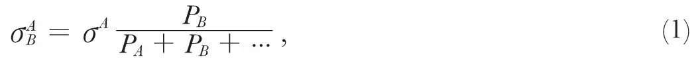
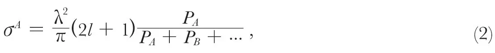
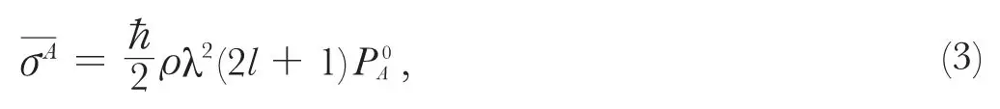
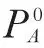
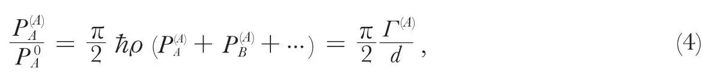
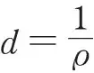
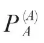
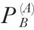
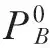

中文
中文N. Bohr et al.
Editor’s Note
The chief interest of this Letter to Nature is its authors: Niels Bohr at Copenhagen was the acknowledged father of quantum mechanics, Rudolf Peierls was a graduate research worker at Copenhagen who eventually migrated to Britain and was the designer of the thermal diffusion process for separating isotopes, and George Placzek was a close colleague of the other two. The point of their letter was to emphasise the utility of an idea due to Bohr that when nuclei collide with each other they first form a “compound nucleus” which can then split up in several different ways. 中文
IT is typical for nuclear reactions initiated by collisions or radiation that they may, to a large extent, be considered as taking place in two steps: the formation of a highly excited compound system and its subsequent disintegration or radiative transition to a less excited state. We denote by A, B, … the possible alternative products of the reaction, specified by the nature, internal quantum state, and spin direction both of the emitted particle or photon and of the residual nucleus and the orbital momentum. Further, we call PA, PB … the probabilities, per unit time, of transitions to A, B, … respectively, from the compound state. 中文
The cross-section of the reaction A→B is then evidently

where σA is the cross-section for a collision in which, starting from the state A, a compound nucleus is produced. This formula implies, of course, that we are dealing with energies for which the compound nucleus can actually exist, that is, that we are either in a region of continuous energy values or, if the levels are discrete, that we are at optimum resonance. Moreover, it is assumed that all possible reactions, including scattering, proceed by way of the compound state, neglecting, in particular, the influence of the so-called “potential scattering”, where the particle is deflected without actually getting into close interaction with the individual constituents of the original nucleus. 中文
On these assumptions a very general conservation theorem of wave mechanics1 yields the relation

where λ is the wave-length of the incident particle and l is the angular momentum. 中文
In the case of discrete levels, (1) and (2) give the same cross-section as the usual dispersion formula, if one applies it to the centre of a resonance level and neglects the influence of all other levels. In this case we have for each resonance level a well-defined quantum state of the compound nucleus, and its properties, in particular the probabilities PA, PB, … then cannot depend on the kind of collision by which it has been formed, that is, they would be the same if we had started from the fragments B, or C, … instead of A. 中文
In the case of the continuum, however, where there are many quantum states with energies that are indistinguishable within the life-time of the compound nucleus, the actual state of the system is a superposition of several quantum states and its properties depend on their phase relations, and hence on the process by which the compound nucleus has been produced. 中文
This dependence is made particularly obvious if we consider the formula

for the mean value of the cross-section over an interval containing many levels, which follows from the well-known considerations of detailed balancing. Here  is the density per unit energy of levels (of suitable angular momentum and symmetry) of the compound nucleus.
is the density per unit energy of levels (of suitable angular momentum and symmetry) of the compound nucleus.

is the probability for process A in statistical equilibrium and thus refers to a micro-canonical ensemble of compound states built up from the fragments A, B …respectively, with proper statistical weights. 中文
In the case of discrete levels, where formula (3) can also be derived directly from the dispersion formula, is simply an average over the individual levels of the probability PA, which in this case is well defined. 中文
In the continuum, (3) must be identical with (2), since the cross-section does not vary appreciably over an energy interval containing many levels, and hence, comparing (2) and (3)

where the superscript A has been added to the probabilities occurring in (1) in order to show explicitly the dependence on the mode of formation, and where Γ(A) is the total energy width of the compound state concerned and

the average level distance. In the continuum, where Γ(A)≫d, the probability
of re-emitting the incident particle without change of state of the nucleus will thus be much larger than the probability of the same process in a compound nucleus produced in other ways. 中文
While the arguments used so far are of a very general character, more detailed considerations of the mechanism of nuclear excitation are required for a discussion of the dependence

of the mode A of the compound nucleus provided A=B. 中文
One can think of cases in which such a dependence must obviously be expected; in fact, if a large system be hit by a fast particle, the energy of excitation might be localized in the neighbourhood of the point of impact, and the escape of fast particles from this neighbourhood may be more probable than in statistical equilibrium. Further, if the system had modes of vibration very loosely coupled, the excitation of one of them, for example by radiation, would be unlikely to lead to the excitation of a state of vibration made up of very different normal modes, even though the state may be quite strongly represented in statistical equilibrium. 中文
In actual nuclei, however, the motion cannot be described in terms of loosely coupled vibrations, nor would one expect localization of the excitation energy to be of importance in nuclear reactions of moderate energy. If we suppose that there are no other special circumstances which would lead to a dependence of on A, it is thus a reasonable idealization to assume that, even in the continuum, all are equal to

, except, of course, for A=B, where we have seen in (4) that the phases are necessarily such as to favour the re-emission of the incident particle. 中文
A typical case of a reaction in the continuum is the nuclear photo-effect in heavy elements, produced by γ-rays of about 17 mv. In the first experiments of Bothe and Gentner, there seemed to be marked differences between the cross-sections of different elements, but the continuation of their investigations2 indicated that these differences can be accounted for by the different radioactive properties of the residual nuclei, and that the cross-sections of all heavy nuclei for photo-effect are of the order of 5×10－26 cm.2. 中文
In previous discussions, based on formulae (1) and (2), where the distinction between and was not clearly recognized, it was found difficult, however, to account for photo-effect cross-sections of this magnitude. In fact, if one estimates the probability of neutron escape PB at about 1017 sec.－1, one should have for PA 1015 sec.－1 and as long as this was taken as it seemed much too large, since it evidently must be much smaller then the total radiation probability, estimated at about 1015, which included transitions to many more final levels besides the ground state. 中文
We see now, however, that P(A) is here considerably larger than , since the level distance at the high excitations concerned is probably of the order of 1 volt, whereas the level width corresponding to the above value of PB is about 100 volts. From (4), or more directly from (3), is thus seen to be only about 1013 sec.－1, which would appear quite reasonable. 中文
(144, 200-201; 1939)
N. Bohr, R. Peierls and G. Placzek: Institute of Theoretical Physics, Copenhagen, July 4.
References:
1. The details of this and of the other arguments of this note will be published in the Proceedings of the Copenhagen Academy.
2. Bothe, W., and Gentner, W., Z. Phys., 106, 236 (1937); 112, 45 (1939).